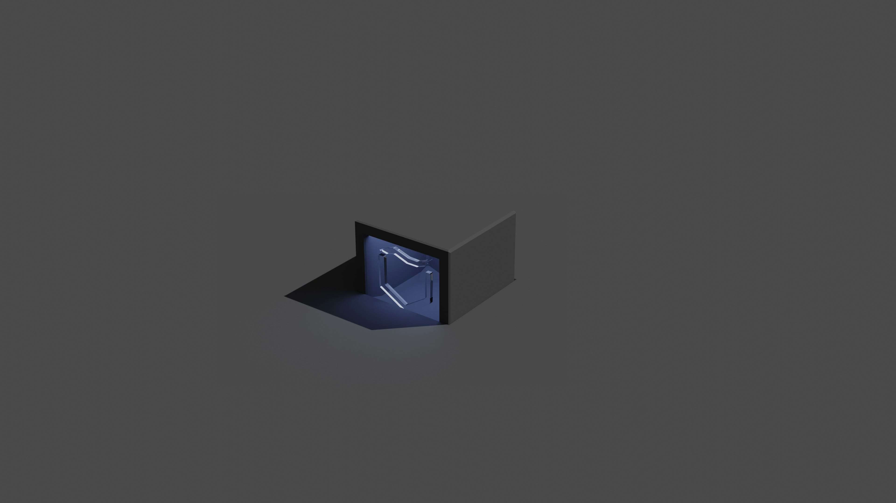

Blender Animation
Before robotics, I was learning 3D animation in Blender - these two clips are from when I was 12 years old.
I loved to visualize physics and simulations, as well as testing light diffraction with glass objects.

Before robotics, I was learning 3D animation in Blender - these two clips are from when I was 12 years old.
I loved to visualize physics and simulations, as well as testing light diffraction with glass objects.